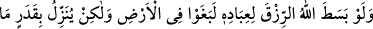
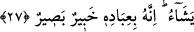

“Kâfirlere gelince,” müminlere verilen sevap ve Allah’ın ziyâde lutf u keremi yerine
“onlara da çetin bir azâb vardır”
Kâşifî şöyle demiştir: Onlar için çok elîm bir azap vardır ki bu hicab; yani Hak’tan
perdeli olmak zilleti ve cezanın devamlı olmasıdır. Zaten hicab zilletinden daha kötü bir
azap da yoktur.
Şâir ne güzel söyler:
Kalbim zahmet ve meşakkatinden dolayı senden asla yüz çevirmez.
Ancak beni mahrûmiyet perdesine bağlı hâle koyarsan o başka.
et-Te’vilâtü’n-Necmiyye’de şöyle denmektedir: “Ne zamanki Allah Teâlâ tevbe
edenlerin tevbesini kabul edeceğini, tevbe etmeyenlerin hatalarını bağışlayacağını,
itâatkâr müslümanları da cennete girdireceğini zikredince kullardan birinin aklına:
“Peki bu cehennem kim için?” diye bir soru gelebilir. Buna karşı Allah Teâlâ “Kâfirlere
gelince, onlara da çetin bir azâb vardır” buyurmuştur.
Yine insanların akıllarına, âsi müminlere de azap olmayacağı gibi bir fikir gelebilir.
Cevap olarak: “Kâfirlere gelince, onlara da çetin bir azâb vardır” buyrulmuştur.
Burada hitap delilinden anlaşılan şudur: Âsi müminlere azap vardır. Ancak
kâfirlerinki kadar şiddetli değildir. Sonra kul cehennem korkusu veya cennet ümidiyle
tevbe etmese bile yine sırf Allah’ın onun tevbesini kabul etmesi için tevbe etmelidir.
Sonra sıradan bir kulun kalbi hep kırıktır. Bu kul Allah’ın mutî kullarının tevbesini
kabul ettiğini bilince, Allah’ın kabul etmesi için onun da böyle güzel tâatı olmasını
temenni eder. Bu sefer Allah Teâlâ şöyle buyurur: “Ey kulum! Şâyet senin kabule şâyân
makbul bir tâatin yoksa bile senin tevbe hakkın var. Tevbe edersen tevben kabul
edilecektir.”
27. Allah kullarına rızkı bol bol verseydi, yeryüzünde azarlardı. Fakat O, (rızkı)
dilediği ölçüde indirir. Çünkü O, kullarının haberini alandır, onları görendir.
“Allah kullarına rızkı bol bol verseydi” (nimetleri) onlara genişletip artırsaydı
“yeryüzünde azarlardı” isyân eder, taşkınlık yaparlardı. “Fakat O, (rızkı) dilediği
ölçüde indirir.”
Kişinin kendini azdıracak kadar servet sahibi ve zengin olamaması, onu günahlardan
koruyan en önemli vesilelerden biridir.
Veya âyetin mânâsı: “İnsanlar bu varlık içinde birbirlerine zulüm ve haksızlık
ederlerdi” şeklindedir. Zîrâ zenginlik, bazen insanları şımarıklık ve küstahlığa